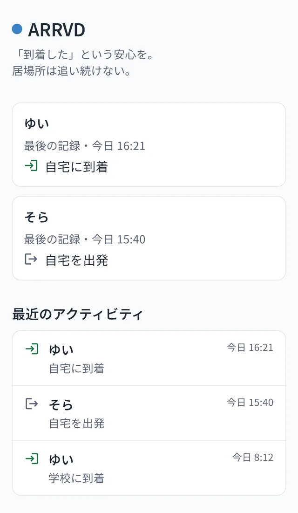

場所を登録
オーガナイザーが自宅や学校などの場所を登録し、その場所でどのメンバーの到着を確認するかを選びます。
大切な人の『着いた』がわかる安心を。
ずっと居場所を追い続けることなく。
家族で登録した場所への到着をお知らせし、予定の時刻までに到着が確認できないときも知らせます。現在地の地図も、移動の履歴もありません。

家族の居場所をずっと追い続けたいわけではなく、「予定した場所に無事着いたか」だけ知りたい。 ARRVDは、その瞬間にフォーカスしたアプリです。いつも居場所を表示するのではなく、家族で登録した場所への到着を確認し、予定の到着が確認できないときにお知らせします。
オーガナイザーが自宅や学校などの場所を登録し、その場所でどのメンバーの到着を確認するかを選びます。
その場所に到着する予定の曜日と時刻を設定します。
メンバーのiPhoneが到着を検知すると、オーガナイザーに通知されます。予定の時刻までに確認できないときは「まだ確認できていません」とお知らせします。
家族は1回限りの招待リンクで参加し、共有するかどうかを本人が選びます。出発のお知らせは場所ごとにオンにできます。
登録した場所への到着に絞った設計。現在地の地図も、移動の履歴もありません。
到着・出発・まだ確認できていない到着の記録は、7日で自動的に削除されます。
余計な機能を増やさず、必要な到着とお知らせだけをシンプルに届けます。
ARRVDは位置情報を使います。メンバーのiPhoneで、iOSの位置情報サービス（主に領域の監視）が、そのメンバーに割り当てられた場所への到着と出発を検知します（位置情報の許可を「常に」にすると、アプリを開いていなくても検知します）。iPhoneが送るのは到着・出発の記録で、座標や経路は送りません。誰かの現在地を表示することもありません。
メンバーは、アプリで共有を選んだときだけ共有し、いつでもやめられます。オーガナイザーは18歳以上、メンバーは13歳以上の方が利用でき、13〜17歳のメンバーは、保護者とご本人の両方が同意するまで何も共有されません（保護者の方へ）。
ARRVDが扱う情報と扱わない情報は、ARRVD プライバシーポリシーに記載しています。
学校、塾、習い事、職場など、予定している場所への到着確認に。
いいえ。ARRVDは、常時のリアルタイム表示ではなく、到着確認を中心に設計しています。移動の履歴も作りません。
はい。メンバーのiPhoneが、iOSの位置情報サービスで登録した場所への到着と出発を検知します（位置情報の許可が「常に」の場合はバックグラウンドでも検知します）。家族に共有されるのは、到着・出発の記録だけです。
はい。ARRVDはiPhone向けにApp Storeで無料配信中です（日本とマレーシア）。App Storeで見る
学校や習い事、職場など、予定した場所へ大切な人が到着したという安心を求める家族向けです。マレーシアと日本にお住まいの方を対象にしています。オーガナイザーは18歳以上、メンバーは13歳以上の方が利用できます。
ARRVDには無料のプランがあります。有料のプランのARRVD Plusは、提供を始めた後にアプリ内で購入できます。各プランの今の上限はアプリ内に表示されます。
いいえ、保証はできません。検知はiOSやiPhoneの設定、電波の状況に左右されるため、到着の検知が遅れたり、検知できなかったりすることがあり、到着していても「まだ確認できていません」と届くことがあります。ARRVDは緊急サービスではありません。検知を助ける設定はサポートをご覧ください。
ARRVDはiPhone向けのアプリです。初回公開以降の対応プラットフォームは検討中で、まだ発表しておりません。
ARRVDは、必要以上の位置情報の露出を抑えるよう設計しています。家族が設定した場所への到着を端末上の位置情報で検知し、誰かの現在地をリアルタイムで表示することはありません。詳しくはARRVD プライバシーポリシーをご覧ください。
ARRVDはiPhone向けにApp Storeで配信中です。無料で始められます。
ARRVDのプライバシーポリシー、利用規約、サポートです。